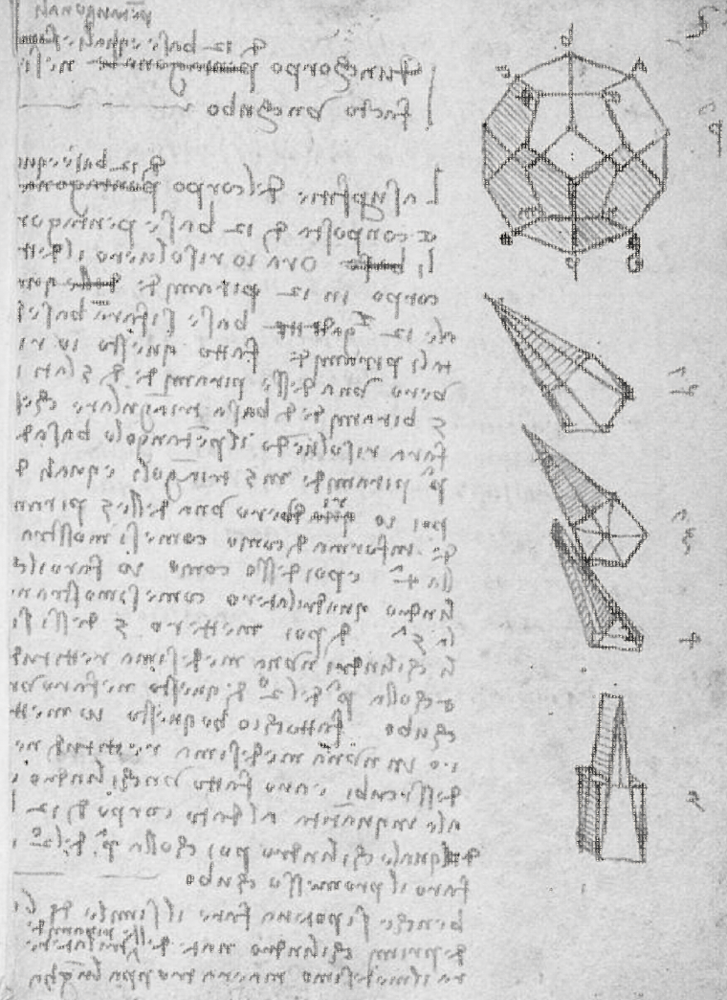

Build Something
The problem with taking the universe apart is that eventually you are left sitting in the pieces.
THE SAME PAPER · THE SAME INK FAMILYIMG_4088 full bleed. The substrate never changes: #171715. Control shows the old photographic treatment. I–III progressively discard photographic middle gray so only near-black drawing survives as ink.

The problem with taking the universe apart is that eventually you are left sitting in the pieces.
THE SAME PAPER · THE SAME INK FAMILY